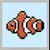

|  |
Bigger Fish
|
We developed a game on the embedded system MZ_APO. It is a simple game where you control a fish and you try to consume other fishes. However always stay sharp, because your teeth are only sharp enough to eat smaller fish, if you try to eat a bigger fish, you will die.
You suddenly appeared in a fishes skin and you happily spent your life inside an aquarium, but as time passed your colours faded and even your fins were not what they used to be. Thus your family decided to flush you down the toilet. As you swirled in the sewerage, some methanphetamine got into your blood stream and suddenly you felt younger, your colours shone as they used to and after your rejuvenating elixir you decided to rule the whole ocean. So show what you have got player, show us what you can do and eat all the fish, but always remember... there is always a bigger fish in the sea.
For comprehensive details on gameplay mechanics, controls, and tips, please refer to the User Manual.